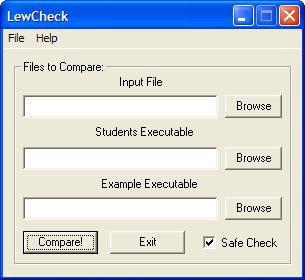

| | LewCheck - "Like a better version of Visual Check Pro"For those of you taking early programming classes, you are probably given an assignment where you have to write a program which under the same input gives the same output as a given example program. Well LewCheck simplifies the comparison process! Similar to the visual check pro program, LewCheck has a simple interface which lets you choose which programs to compare and on which input. It also allows you have to spaces in the file names and even have the programs in different folders (as long as LewCheck and the input files are in the same folder). Also it creates a file called quickcompare.bat which remembers the last two programs you compared and can automatically recompare them by just double-clicking it, without you having to reenter their names. It also includes a 'Safe Check' feature, which helps stop the problem where a program will hang on a certain input and fill-up your harddrive (it does this by first running both programs without saving their output to a file, this way if one of them hangs, it never writes anything to file, saving you from creating 30 MB files filled with errors). NOTE: that the differences found by LewCheck should be exactly the same as those found by Visual Check Pro, because they both use the same underlying Windows tool ('fc'). This program is what I used instead of Visual Check Pro while taking CGS 2425, which allowed me to write my code in Visual C++, in any folder I want. I've also posted the source code if anyone is interested, as you'll see it was a VERY easy program to write. It requires Visual C++ 6.0 to compile.

|